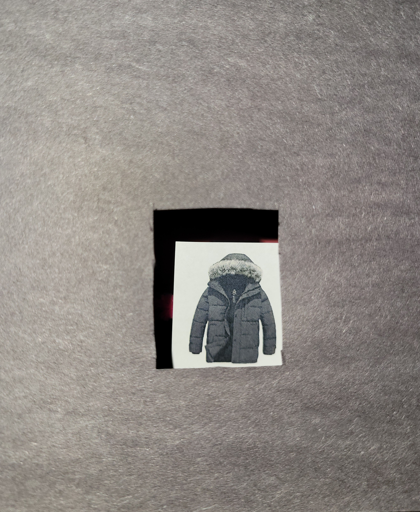
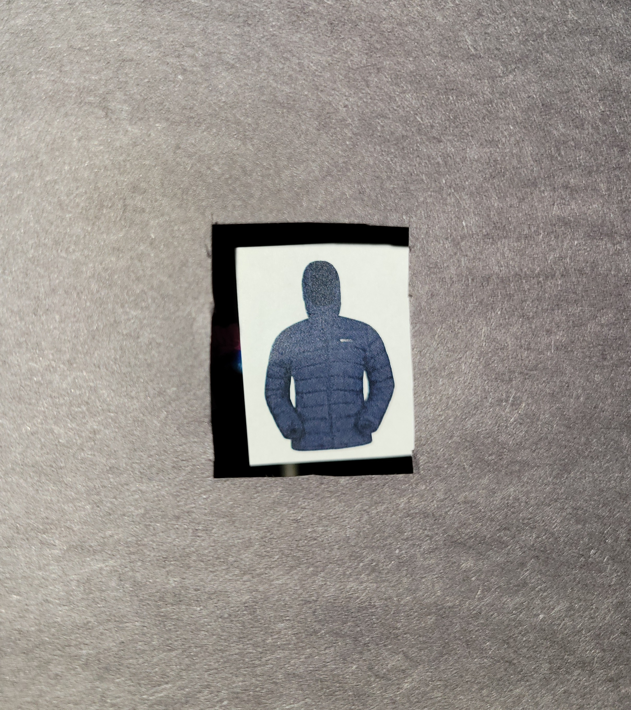
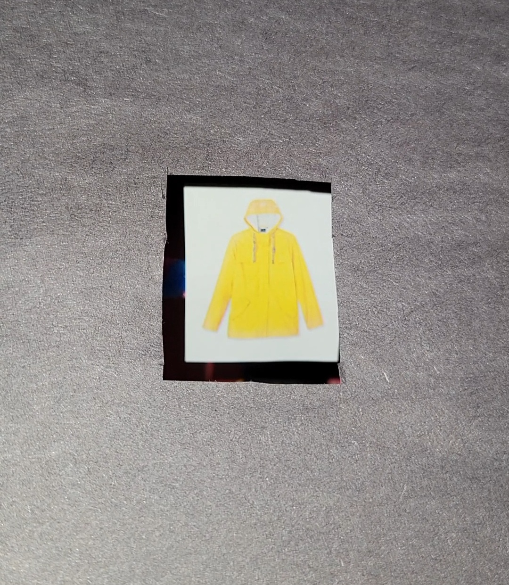
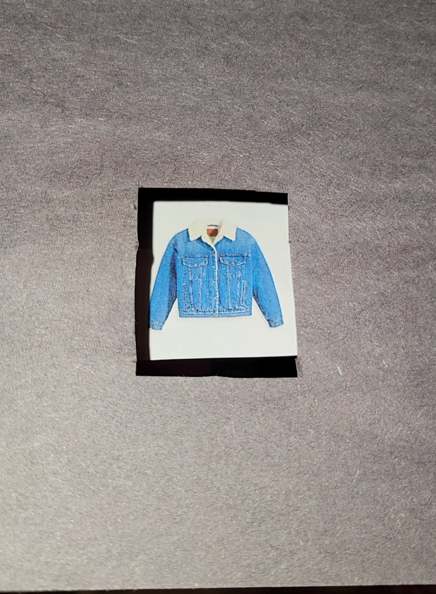
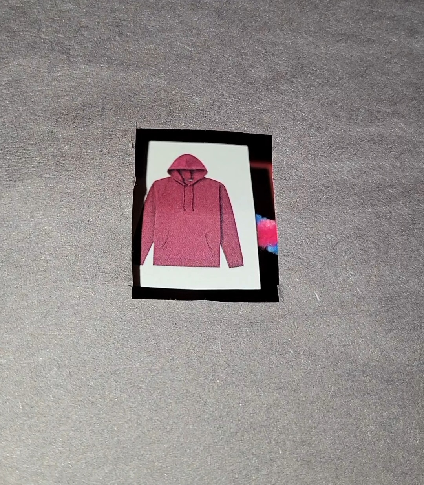
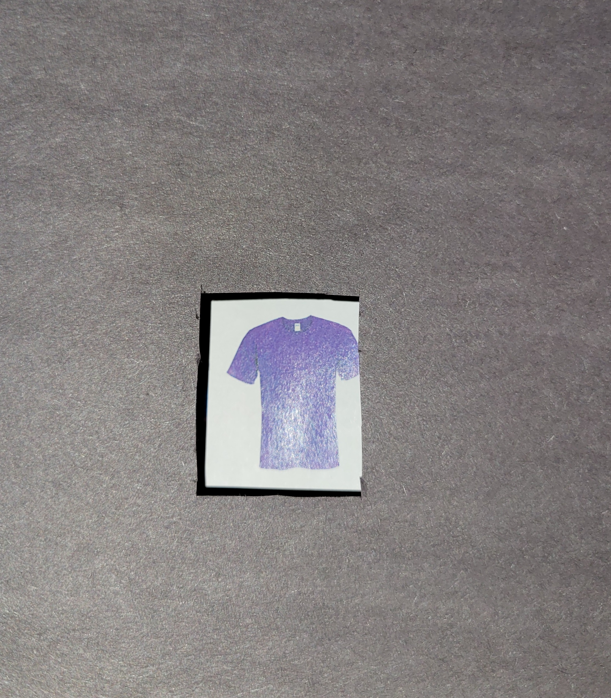
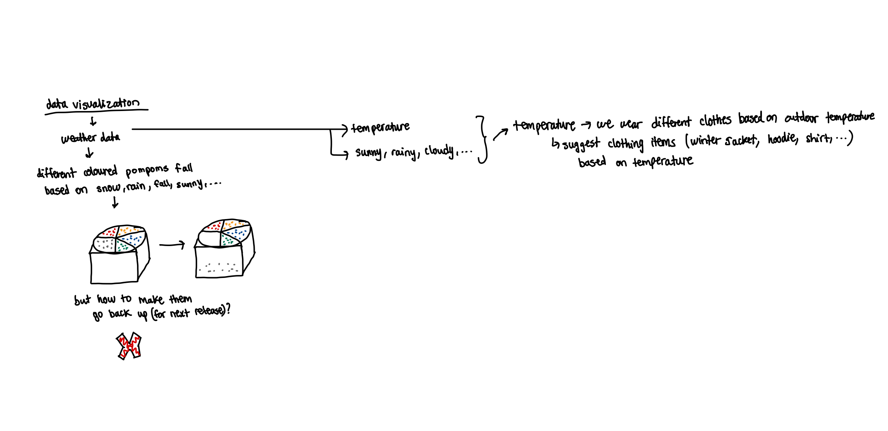
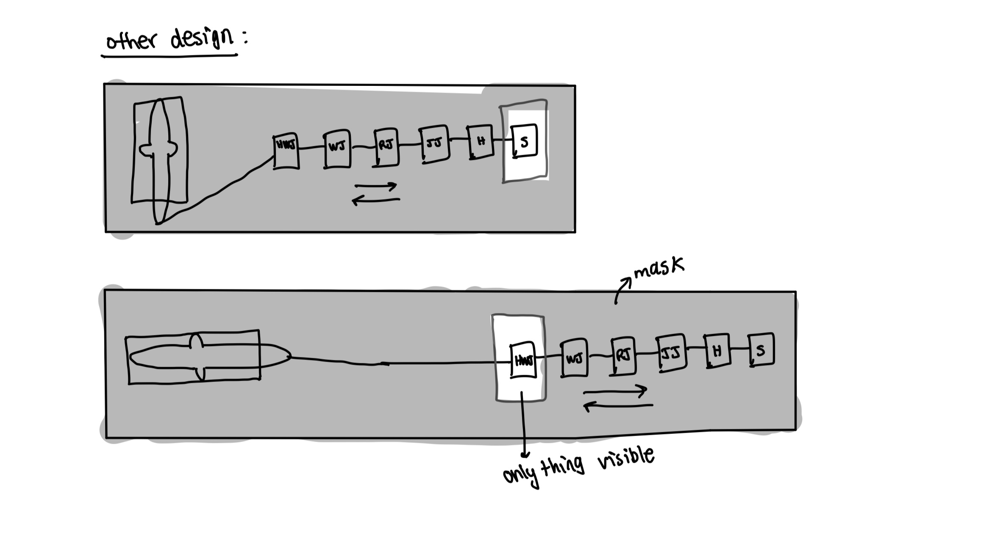
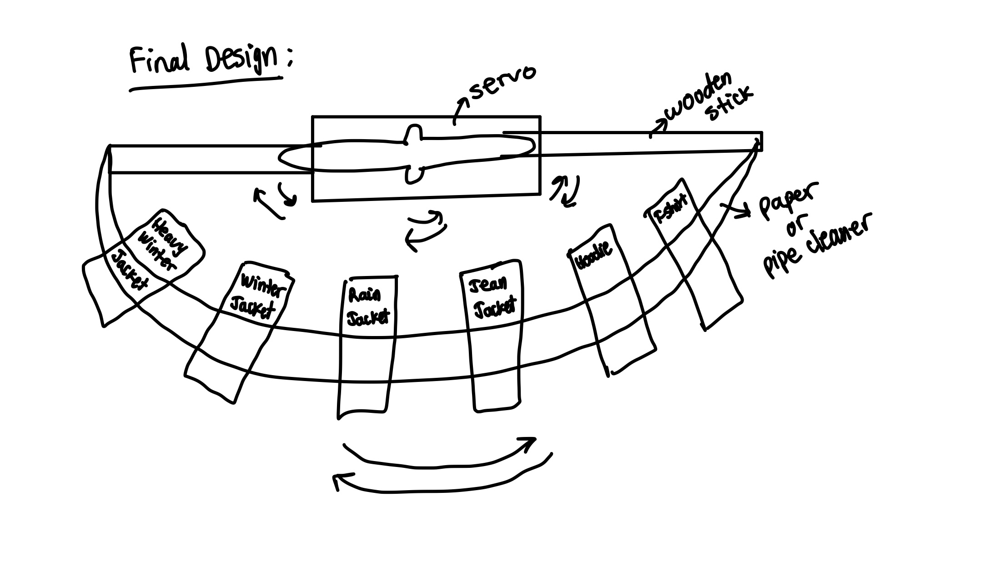
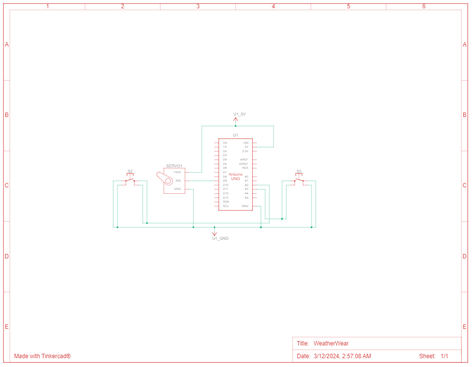

System Documentation
Weather Wear
WeatherWear is an interactive, IoT physical data visualization system that bridges the gap between digital meteorological data and physical space. Designed as a tangible alternative to traditional smartphone applications, the model fetches real-time ambient weather data and translates it into an intuitive, physical display that suggests appropriate clothing choices for the user.
1. Overview and Concept
In a world saturated with digital screen notifications, this project explores tangible user interfaces (TUIs) to streamline daily routines. By transforming abstract digital forecasts into ambient, glanceable physical representations, the system allows users to make informed, screen-free decisions before stepping outdoors.
The system converts complex digital weather streams including temperature, precipitation, and ambient conditions into an intuitive physical and visual form. By leveraging an integrated logic engine, it dynamically maps this real-time climate data to tailored, highly practical clothing recommendations. This ambient approach ultimately minimizes digital fatigue by delivering high-utility information at a glance, completely eliminating the need to interact with a smartphone or screen before heading outdoors.
2. Architecture Development
WeatherWear displays the weather data using clothing items. This model informs the user of what to wear if going outdoors. It extracts data from a weather-focused website and displays real-time weather information.
For instance, if the outdoor temperature drops to 2°C, the system dynamically visualizes this chill by displaying a winter jacket, intuitively signaling to the user that they need heavy insulation before stepping outside. Conversely, if the temperature climbs to a warm 25°C, the display shifts to a T-shirt to indicate that lightweight clothing is appropriate for the current climate. Furthermore, the logic engine account for active precipitation; if it begins to rain, the model overrides or adapts the display to show a rain jacket, ensuring the user is always properly protected from the elements.
Hence, WeatherWear represents weather data through the appropriate clothing item to wear for that weather condition.
As an additional feature, the system allows users to proactively plan their day by displaying forecasted weather information for the next few hours. This eliminates the daily guesswork of deciding whether to pack an extra layer or a rain jacket, as the interface clearly signals what the coming hours will bring. This functionality is entirely user-driven via the integrated dual-button interface; pressing the right push button allows the user to look ahead and watch how the weather changes over the upcoming timeline, while pressing the left push button decrements the display back to the current hour's conditions.
The images below showcase the final artifact:
Each of the following clothing items are displayed according to the weather condition at which they should be worn.






The following images display the concept development that took place for this project.



3. Hardware Logic
The physicalization is built around the Arduino Uno microcontroller, which acts as the central hub managing both mechanical outputs and tactile user inputs. To translate digital weather streams into a tangible representation, a servo motor is mechanically linked to a physical display array, dynamically sweeping to precise angular coordinates to reveal the appropriate clothing recommendation. Users navigate the forecast timeline using a dual-button configuration wired directly to the microcontroller. The right push button serves as an increment trigger that prompts the system to step forward into upcoming forecast data, while the left push button acts as a decrement trigger to shift the display back toward the present condition. Both tactile switches utilize debouncing logic to ensure clean digital state transitions, allowing the Arduino to flawlessly transmit hardware interrupts over a USB serial bus based on which button is pressed.
Circuit Schematic Diagram:

4. Core Firmware Implementation
The software pipeline relies on a custom Python script that handles high-level data orchestration by connecting to a weather API to extract, parse, and isolate both current and forecasted meteorological conditions. Using an integrated conditional logic engine, the script determines the optimal clothing profiles for different time intervals and stands ready to transmit these packages over a USB serial bus. Simultaneously, the Arduino firmware maintains a continuous serial listening loop while actively monitoring the dual-button interface. When a user presses the right push button, the Arduino sends an interrupt signal to the Python script to fetch and increment to the next upcoming forecast. Conversely, pressing the left push button sends a separate trigger that decrements the timeline back toward the present data. Upon receiving these hardware cues, the Python script transmits the corresponding data packet, which the firmware decodes and maps to a specific angular position, instantly driving the servo motor to reveal the correct physical wardrobe suggestion.